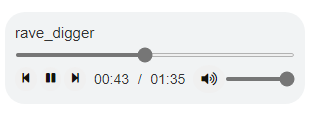

{howler} - Interactive Audio Player 
howler is a package that utilises the howler.js library to play audio on the modern web.
Installation
This package is not yet available on CRAN. To install the latest version:
install.packages("devtools")
devtools::install_github("ashbaldry/howler")Usage
The HTML way to include an audio file in any shiny application/web page is to use the <audio> tag. This can generally only handle one audio file, and cannot (easily) be manipulated from the server side.
tags$audio(src = "audio/sound.mp3", type = "audio/mp3", autoplay = NA, controls = NA)howler.js uses the Web Audio API, and with this we are able to create an audio player that can solve both of the above issues and more:
library(shiny)
library(howler)
ui <- fluidPage(
title = "howler Example",
howler(
elementId = "sound",
tracks = list("Track 1" = "audio/track_1.mp3", "Track 2" = "audio/track_2.mp3"),
auto_continue = TRUE,
auto_loop = TRUE,
seek_ping_rate = 1000
),
howlerPreviousButton("sound"),
howlerPlayPauseButton("sound"),
howlerNextButton("sound")
)
server <- function(input, output, session) {
observe({
req(input$sound_seek)
if (round(input$sound_seek) == 10) {
pauseHowl("sound")
} else if (round(input$sound_seek) == 20) {
changeTrack("sound", "Track 2")
}
})
}
shinyApp(ui, server)Module
The howler package also includes a lightweight module howlerModuleUI and howlerModuleServer that adds a bit of styling to replicate the style of a standard <audio> HTML player.

Howler module UI